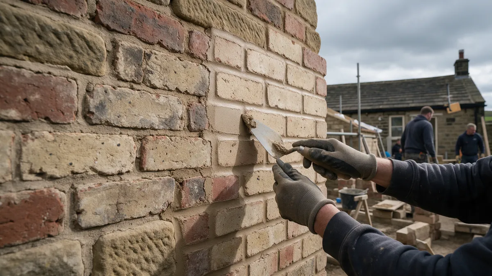

Services · Brickwork and repointing
Brick and stone, done in the right mortar.
New brickwork and stonework, rebuilds, arches, piers and repointing. On older stone and soft brick that means a lime mortar, because hard cement traps damp in the wall and takes the face off the stone.

Generated photoWhat we hear
Sound familiar?
- The pointing is falling out in handfuls.
- Somebody pointed it in cement and now it looks wrong and feels damp.
- The top of the gable is bowing.
- We want the new brick to match and it never does.
On the job
What happens
- Look at the wall first: what it is built of, what it was pointed with, and why it has failed.
- Rake out by hand where the wall is soft, not with a grinder that eats the arrises.
- Mix to match the original as closely as we can, and do a sample panel for you to look at.
- Point in panels so the colour and the finish stay even across the wall.
- Protect it while it cures, because lime does not like frost or baking sun.
Sample jobs
Brickwork and repointing, from our work
 Generated photoRepointing an old wallBrighouse · sample
Generated photoRepointing an old wallBrighouse · sample Generated photoGable end rebuiltHuddersfield · sample
Generated photoGable end rebuiltHuddersfield · sampleMade up sample jobs, with pictures generated for this demo.
Questions
Common questions
Why not just use normal cement?
On a modern cavity wall, cement is fine. On old solid stone or soft brick it is harder than the stone around it, so the water goes through the stone instead of the joint and the face blows off. The mortar is meant to be the soft bit.
Can you match our brick or stone?
Usually close, sometimes exactly. Reclaimed brick and stone from the right era helps a lot. We show you a sample before we do the lot, because matching on a sunny day and matching in the rain are two different things.
Does the whole wall need doing?
Not always. Often it is one elevation, the one that takes the weather. We will tell you what can wait.
How long before it is dry?
Lime takes its time and it will look patchy while it goes off. We will tell you roughly what to expect so you are not worrying at it after a week.
Want somebody to come and look?
Tell us what you are after and where you are. We will come out, measure up and put it in writing.